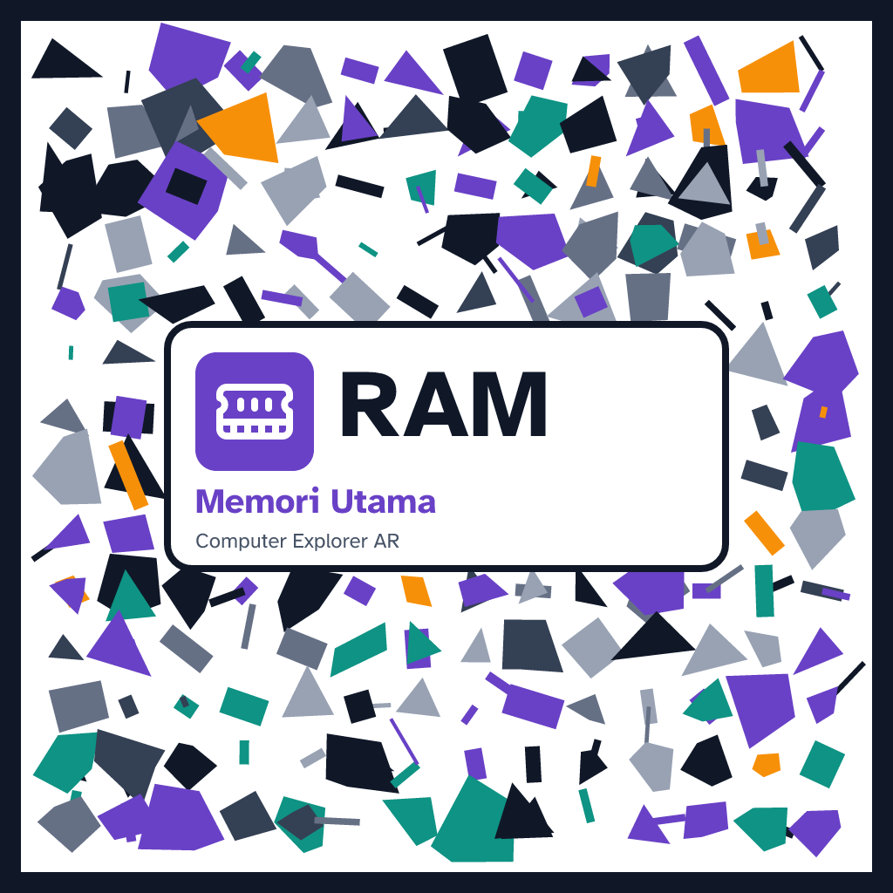
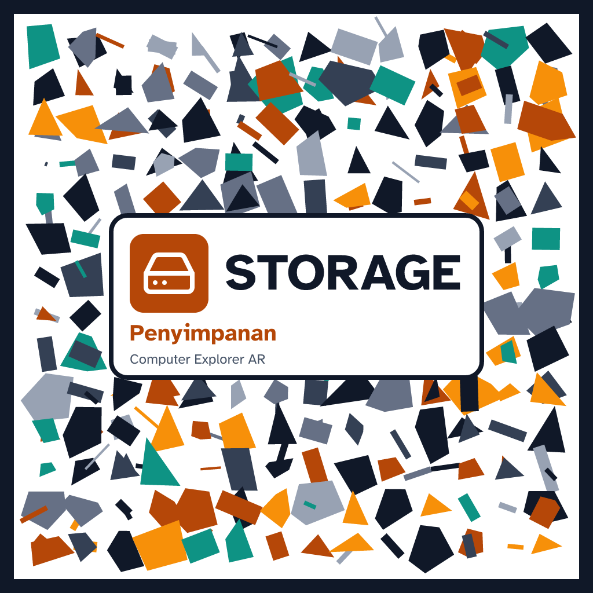
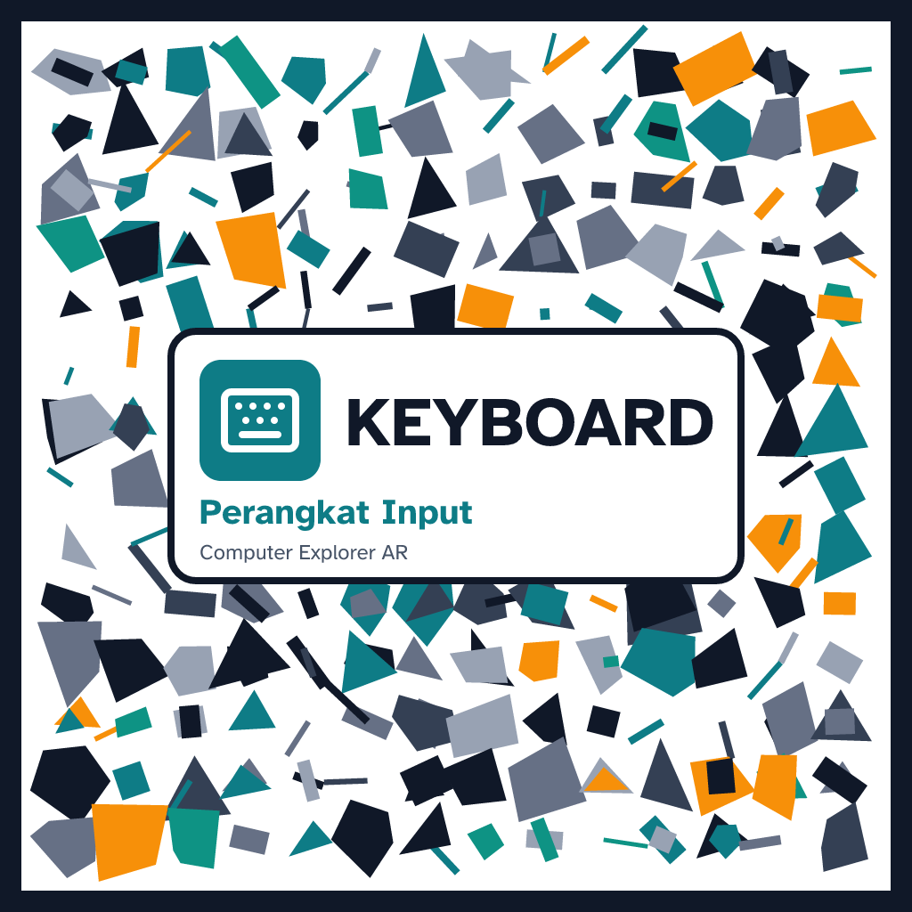
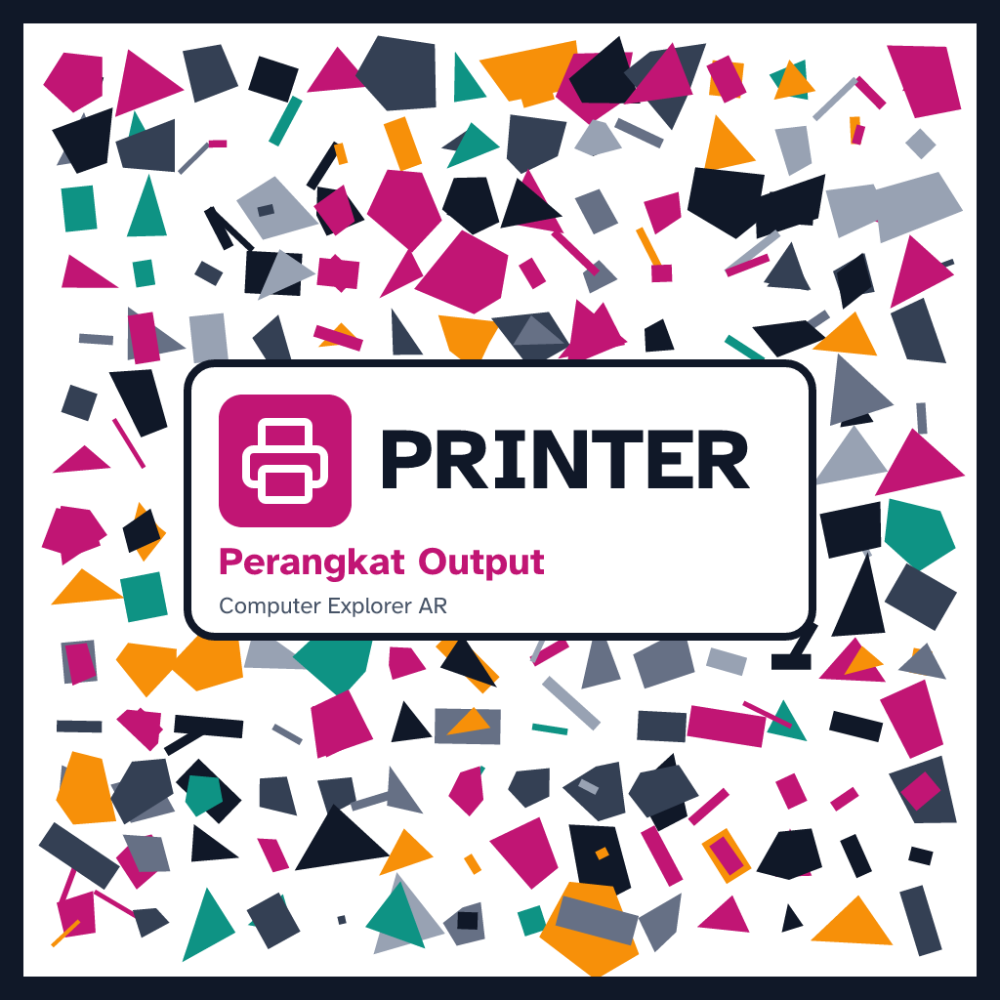
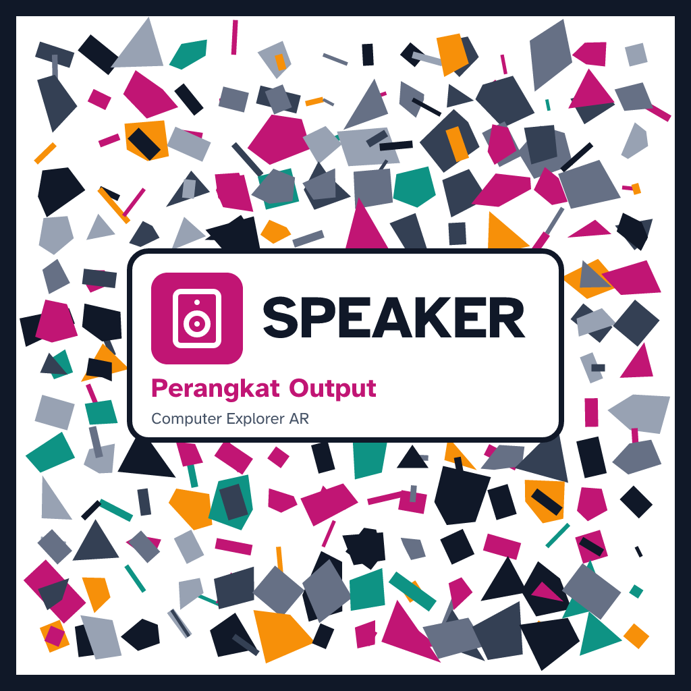

CPU_Target — CPU (Central Processing Unit) · lebar cetak 15 cm
CPU_Target — CPU (Central Processing Unit) · lebar cetak 15 cm

Memory_Target — RAM (Memori Utama) · lebar cetak 15 cm

Storage_Target — STORAGE (Penyimpanan) · lebar cetak 15 cm

Keyboard_Target — KEYBOARD (Perangkat Input) · lebar cetak 15 cm

Mouse_Target — MOUSE (Perangkat Input) · lebar cetak 15 cm

Monitor_Target — MONITOR (Perangkat Output) · lebar cetak 15 cm

Printer_Target — PRINTER (Perangkat Output) · lebar cetak 15 cm

Speaker_Target — SPEAKER (Perangkat Output) · lebar cetak 15 cm

VonNeumann_Target — VON NEUMANN (Arsitektur Komputer) · lebar cetak 15 cm